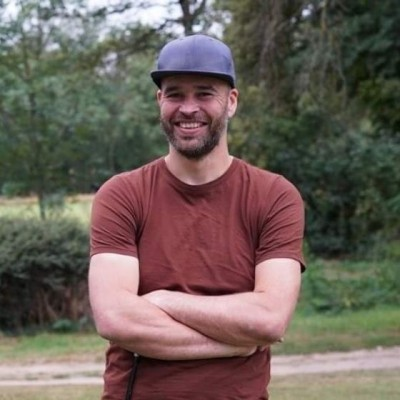

IT Architect Infrastructure & Cloud
Hi, I'm Jurjen.
I design and run the platform
everything else is built on.
From on-premises data centres to Azure hybrid cloud — I architect the networks, clouds and workplaces that thousands of people rely on every day, and I stay close enough to the keyboard to keep them running.

Selected case / Accell Group
From data centre to hybrid cloud, built for the group.
Accell is a group of some 20 cycling companies across Europe. I help shape and deliver the infrastructure underneath them: Azure hybrid cloud, Kubernetes, networking, workplace and security — from strategy to deployment.
- Transforming on-premises resources to Azure (IaaS, PaaS, virtualisation, storage, backup)
- Designing and operating LAN, WAN, Wi-Fi and data centre connectivity
- Running Azure Kubernetes Services and Azure App Services as delivery platforms
- Partnering with security on policies, tooling and hardening — by design, not afterthought
- Technical lead for infrastructure migrations and integrations across Europe
What I do
Where infrastructure meets production.
Architect for change
Solution designs that fit the strategy and survive contact with reality — cloud, network, workplace.
Automate the platform
Azure DevOps pipelines and infrastructure as code, so the safe path is the repeatable path.
Secure by design
Identity, endpoint and network security worked into the design together with the security team.
Stay hands-on
Third-line engineering when it matters. I don't just draw the plan — I help ship and run it.
Away from the keyboard
Motorcycling, squash and padel, snowboarding, and fixing or building anything with a plug on it.
Career / 15+ years in IT
From support desk to group architect.
-
2024 — now
Accell Group
IT Architect Infrastructure & Cloud
Co-own the technology strategy and its implementation: cloud transformation, data centre, networking and security architecture for the group.
-
2012 — 2024
Accell IT B.V.
Infrastructure Engineer III (Senior)
Third-line engineering and Azure DevOps work: AKS and hybrid cloud, Office 365 migrations across Europe, SCCM, Intune, Okta and security rollouts (Rapid7, SentinelOne).
-
2009 — 2012
Accell IT B.V.
Support Engineer
First- and second-line support, CMDB and workplace support on site across Europe and the US. Where I learned to translate what people need into what IT delivers.
-
2008
Hanzehogeschool Groningen
BSc Business Information Technology (HBO Bedrijfskundige Informatica)
Also built the Business Intelligence course module as a graduate — data warehouse templates with Oracle Warehouse Builder.
Certifications & training: Microsoft MD-100 · Azure Infrastructure Solutions · Windows Server 2012 (install & admin) · ITIL Foundation v3 · Lean Six Sigma Yellow Belt
Working stack
Tools are a means. The platform is the work.
Build & run
Manage & secure
Connect
Contact
Building, changing or scaling a platform?
Happy to talk infrastructure, cloud transformation or anything with a motor and a plug.